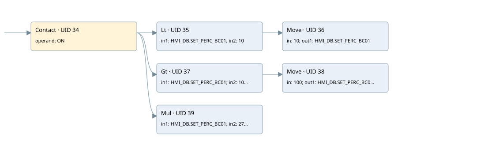

bc01
analog output conversion · 검색 색인 순서 14 · 원본 내부 NID 추정 17
백업 PLF 원본의 3093439 바이트 위치에서 복원한 XML. 검색 문서 1692의 객체 키 16102200b266000000000000와 연결했다. 이름 해석 12/12개. 남은 RefId는 상수 또는 미해석 참조다.
연결 구조 다시 그리기
원본 Part/PCon/Wire를 이용한 연결도다. TIA 화면의 래더 배치 또는 실행 결과를 재현한 그림은 아니다. 핀 연결은 아래 표와 원본 XML을 기준으로 읽는다. 노드 위에 마우스를 두면 피연산자 이름을 볼 수 있다.

접점·코일·블록과 피연산자
| Part UID | Gate | Negated 핀 | 연결 피연산자 |
|---|---|---|---|
| 34 | Contact | operand = ON | |
| 35 | Lt | in1 = HMI_DB.SET_PERC_BC01; in2 = 10 | |
| 36 | Move | in = 10; out1 = HMI_DB.SET_PERC_BC01 | |
| 37 | Gt | in1 = HMI_DB.SET_PERC_BC01; in2 = 100 | |
| 38 | Move | in = 100; out1 = HMI_DB.SET_PERC_BC01 | |
| 39 | Mul | in1 = HMI_DB.SET_PERC_BC01; in2 = 272; out = 102A5_SPARE0 |
접점 경로를 펼친 조건식
Contact·O/A·비교기의 원본 연결을 읽기 쉽게 펼친 보조 해석이다. POWER는 전원 레일 시작을 뜻한다. 호출 블록·에지·타이머의 내부 동작과 다중 쓰기 순서는 이 표로 실행 검증하지 않았다. 미해석 핀과 RefId는 원문 연결표에서 확인한다.
| UID | 동작 | 대상 | 원본 접점 경로 | 내용 |
|---|---|---|---|---|
| 36 | Move | HMI_DB.SET_PERC_BC01 | (ON AND [HMI_DB.SET_PERC_BC01 < 10]) | Move 입력 10 |
| 38 | Move | HMI_DB.SET_PERC_BC01 | (ON AND [HMI_DB.SET_PERC_BC01 > 100]) | Move 입력 100 |
원본 배선 연결
| Wire UID | 동일 Wire 연결 끝점 |
|---|---|
| 21 | Powerrail {} ↔ Part 34.in |
| 53 | ORef 40 (ON) ↔ Part 34.operand |
| 54 | Part 34.out ↔ Part 35.pre ↔ Part 37.pre ↔ Part 39.en |
| 55 | ORef 41 (HMI_DB.SET_PERC_BC01) ↔ Part 35.in1 |
| 56 | ORef 42 (10) ↔ Part 35.in2 |
| 57 | Part 35.out ↔ Part 36.en |
| 58 | ORef 43 (10) ↔ Part 36.in |
| 59 | Part 36.out1 ↔ ORef 44 (HMI_DB.SET_PERC_BC01) |
| 60 | ORef 45 (HMI_DB.SET_PERC_BC01) ↔ Part 37.in1 |
| 61 | ORef 46 (100) ↔ Part 37.in2 |
| 62 | Part 37.out ↔ Part 38.en |
| 63 | ORef 47 (100) ↔ Part 38.in |
| 64 | Part 38.out1 ↔ ORef 48 (HMI_DB.SET_PERC_BC01) |
| 65 | ORef 49 (HMI_DB.SET_PERC_BC01) ↔ Part 39.in1 |
| 66 | ORef 50 (272) ↔ Part 39.in2 |
| 67 | Part 39.out ↔ ORef 51 (102A5_SPARE0) |
식별자 해석 근거 12개
| ORef UID | RefId | 이름 | IdentXmlPart 파일 | 해석 방법 |
|---|---|---|---|---|
| 40 | 1 | ON | 0664-IdentXmlPart.xml, 0686-IdentXmlPart.xml | UID/RID + search-text + NID agreement |
| 41 | 148 | HMI_DB.SET_PERC_BC01 | 0662-IdentXmlPart.xml | UID/RID + search-text + NID agreement |
| 42 | 146 | 10 | 0661-IdentXmlPart.xml | literal candidate: UID/RID/NID + nearby named declarations + search-text agreement |
| 43 | 146 | 10 | 0661-IdentXmlPart.xml | literal candidate: UID/RID/NID + nearby named declarations + search-text agreement |
| 44 | 148 | HMI_DB.SET_PERC_BC01 | 0662-IdentXmlPart.xml | UID/RID + search-text + NID agreement |
| 45 | 148 | HMI_DB.SET_PERC_BC01 | 0662-IdentXmlPart.xml | UID/RID + search-text + NID agreement |
| 46 | 12 | 100 | 0661-IdentXmlPart.xml | literal candidate: UID/RID/NID + nearby named declarations + search-text agreement |
| 47 | 12 | 100 | 0661-IdentXmlPart.xml | literal candidate: UID/RID/NID + nearby named declarations + search-text agreement |
| 48 | 148 | HMI_DB.SET_PERC_BC01 | 0662-IdentXmlPart.xml | UID/RID + search-text + NID agreement |
| 49 | 148 | HMI_DB.SET_PERC_BC01 | 0662-IdentXmlPart.xml | UID/RID + search-text + NID agreement |
| 50 | 16 | 272 | 0661-IdentXmlPart.xml | literal candidate: UID/RID/NID + nearby named declarations + search-text agreement |
| 51 | 144 | 102A5_SPARE0 | 0664-IdentXmlPart.xml | UID/RID + search-text + NID agreement |
검색 코드 보조 자료
참조 명칭을 찾기 위한 자료이며 실행 순서나 AND/OR 관계는 위 연결표로 확인한다.
"on" "hmi_db".set_perc_bc01 10 move 10 "hmi_db".set_perc_bc01 100 move 100 "hmi_db".set_perc_bc01 mul "hmi_db".set_perc_bc01 272 "102a5_spare0":p "hmi_db".set_perc_bc01